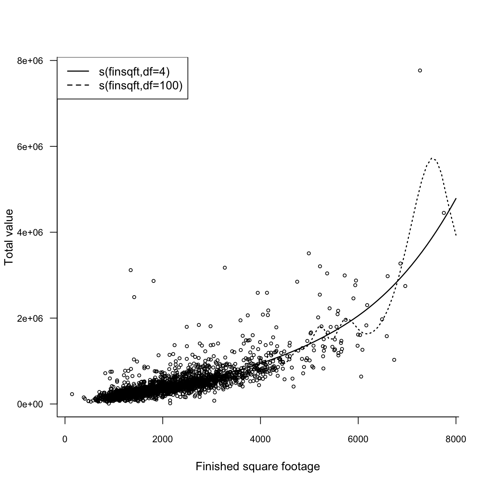

Generalized linear models (GLMs) generalize the classical linear regression model in a number of ways, detailed in Section 26.1. The most important generalization is to allow the target variable to be distributed according to any of the members of the exponential family of distributions. An important property of the linear model retained in GLMs is the linear predictor \(\eta = \textbf{x}^\prime\boldsymbol{\beta}\): the predictor is a linear function of the inputs.
Generalized additive models (GAMs) relax the linear predictor assumption of GLMs. There is still a predictor and it is additive, but it is not additive in the \(\beta_j x_j\) components. Instead, the predictor is additive in functions of the inputs. Mathematically, the change from GLMs to GAMs is a change from \[
\eta = \beta_0 + \beta_1 x_1 + \beta_2 x_2 + \cdots + \beta_p x_p
\] to \[
\eta = \beta_0 + f_1(x_1) + f_2(x_2) + \cdots + f_p(x_p)
\]
Each input is modeled with its own function. Where did the \(\beta\)s go? There still is an overall intercept that adjusts for the level of \(Y\), any remaining parameters that need to be determined depend on the particulars of the functions \(f_j(x_j)\). For example, if \(f_1()\) is a natural spline in \(x_1\), then the spline basis expands into a certain number of columns depending on the degrees of freedom of the spline.
Once the predictor of the GAM has been determined, predicting the mean proceeds as in the GLM, invoking the inverse link function, \(\mu = g^{-1}(\eta)\).
How do we choose the functions \(f_1(),\cdots,f_p()\)? If \(x_j\) is discrete (a factor), then it is common to estimate \(f_j(x_j)\) with a separate constant value for each of the factor levels. If \(x_j\) is continuous, local methods from Chapter 12 are candidates. In principle, you could use any technique for expressing \(Y\) as a function of \(x\) as one of the \(f_j\).
27.2 Pros and Cons of GAMs
GAMs are another generalization of the classical model on top of GLMs. In a sense, they bring the concept of local models into the GLM framework and add flexibility to capture non-linear relationships. Rather than trying out different transformations of \(x_j\) such as logarithms, square roots, inverses, polynomials, etc., you can leave it to the non-parametric nature of \(f_j()\) to find the appropriate trend.
Yet the contributions of the input variables remain additive: you can evaluate the contribution made by adding \(f_2(x_2)\) to a model containing \(f_1(x_1)\). Model interpretation is simple in terms of additive effects of functions of the inputs.
One downside of the GAM formulation is that the model is additive in functions of individual inputs. When \(x_1\) and \(x_2\) interact, how can you capture this in an additive model? One approach is to consider the product \(x_1x_2\) and add it to the GAM as another variable: \[
\eta = \beta_0 + f_1(x_1) + f_2(x_2) + f_3(x_1x_2)
\]
Another approach would be to add a two-dimensional smooth function of \(x_1\) and \(x_2\): \[
\eta = \beta_0 + f_1(x_1) + f_2(x_2) + f^*_3(x_1, x_2)
\] Notice the subtle difference between \(f_3(x_1x_2)\) and \(f^*_3(x_1,x_2)\): the former is a one-dimensional smoother in the product of the two variables, the latter is a two-dimensional smoother.
Another downside of the GAM formulation is a more complicated fitting procedure. If \(Y\) is Gaussian and all \(f_j\) are simple natural cubic splines, then we can set up one big \(\textbf{X}\) matrix with the columns of the splines and compute the solution directly, as in a linear regression. If the \(f_j\) are smoothing splines, or loess models, or other functions that require a local fitting routine, then a different algorithm is needed. The solution is known as the backfitting algorithm (Hastie and Tibshirani 1990).
The backfitting algorithm, more fully described below, is an iterative algorithm. Fitting a GLM is typically also an iterative procedure (unless \(Y\) is Gaussian and the link is the identity function). A GAM for non-Gaussian data is thus a doubly iterative procedure. The IRLS algorithm described in Section 26.4.2 derives the maximum likelihood estimates by repeatedly fitting a weighted linear model, updating the pseudo-response and the weights of the model after each iteration. With a GAM component, fitting the weighted model at each of the IRLS iteration uses a weighted iterative backfitting algorithm. The IRLS algorithm defines the outer loop of the doubly-iterative algorithm, the backfitting algorithm comprises the inner loop.
While doubly-iterative algorithms are not unusual in statistical modeling, they do present additional challenges:
The outer and the inner iteration might not converge.
Convergence criteria are needed for both iterations, and they can be different. Tolerances for the inner iterations can change as the outer iterations progress. It makes sense to have more lax convergence criteria for the inner loop at early stages of the outer iteration than toward the end.
Increased computational burden..
Backfitting Algorithm
The idea of the backfitting algorithm is straightforward. Fit a scatterplot smoother \(f_k\) to the partial residuals that extract the signal of all other functions \(f_j, j \neq k\). Replace the previous values of \(f_k\) with the new values. Do this in turn for all functions until some convergence criterion is met.
Suppose the response is continuous and the observational generalized additive model can be written as \[
Y_i = \beta_0 + \sum_{j=1}^p f_j(x_j) + \epsilon_i \qquad i=1,\cdots,n
\] with mean-zero errors. This GAM applies when \(Y_i\) is Gaussian distributed. The backfitting algorithm takes the following steps
Step 0: Estimate \(\widehat{\beta}_0\) as \(\frac{1}{n}Y_i\)
Step 1: \(\widehat{f}_j = 0 \quad \forall j\)
Step 2: Cycle through the \(k=1,\cdots,p\) functions and replace \(\widehat{f}_k\) with a smoother of the partial residuals \[
y - \widehat{\beta}_0 - \sum_{j=1, \ne k}^p \widehat{f}_j(x_j)
\]
Step 3: Stop the process if the functions \(\widehat{f}_j\) are changing by less than a chosen threshold, otherwise return to step 2.
At the end of step 2 for each of the functions, the estimated functions can be re-centered as \(\widehat{f}_j - \frac{1}{n}\sum \widehat{f}_j(x_{ij})\). While this is not necessary from a theoretical standpoint, the finite-precision calculations can benefit from re-centering.
Among the issues with the backfitting algorithm are
the arbitrary stop criterion: monitoring the change in function norms or the predicted values, a sum of squares criterion, etc. It is not clear what is the best (right) choice.
the order-dependence: the solution of the backfitting algorithm depends on the order in which the \(f_j(x_j)\) enter the model.
non-uniqueness: the solution of the algorithm is not unique (unless expressed in terms of eigendecomposition of projections).
27.3 Example: Real Estate Values in Albemarle County, Virginia
In Section 26.5 we fit a Gamma regression model to the home values in Albemarle County, VA. For comparison with a GAM, we repeat here the model from that section, it expresses total home value as a function of the finished square footage of the home:
library(duckdb)con <-dbConnect(duckdb(),dbdir ="ads.ddb",read_only=TRUE)homes <-dbGetQuery(con, "SELECT * FROM AlbemarleHomes")dbDisconnect(con)str(homes)
Call:
glm(formula = totalvalue ~ finsqft, family = Gamma(link = "log"),
data = homes)
Coefficients:
Estimate Std. Error t value Pr(>|t|)
(Intercept) 1.178e+01 1.986e-02 593.18 <2e-16 ***
finsqft 5.081e-04 8.753e-06 58.04 <2e-16 ***
---
Signif. codes: 0 '***' 0.001 '**' 0.01 '*' 0.05 '.' 0.1 ' ' 1
(Dispersion parameter for Gamma family taken to be 0.2122692)
Null deviance: 1206.00 on 3024 degrees of freedom
Residual deviance: 378.25 on 3023 degrees of freedom
AIC: 79593
Number of Fisher Scoring iterations: 4
The model converges in 4 iterations and the maximum likelihood estimates of the coefficients are \(\widehat{\beta}_0\) = 11.7823 and \(\widehat{\beta}_1\) = 5.1^{-4}.
The addition of the single input variable finsqft reduces the deviance dramatically, compared to a null model; from 1205.995 to 378.25. The finsqft coefficient is highly significant.
How does this compare to a generalized additive model where the effect of finsqft is modeled as a smoothing spline? We use the gam::gam function to fit the GAM via backfitting algorithm. The gam function gives you flexibility in the formula for the predictor. You can specify effects of inputs as linear effects by simply listing the variable name, or as smooth effects by wrapping the variable in one of the possible smoother expressions. Currently, those expressions are s() for a smoothing spline, and lo() for a local regression (loess) smoother.
Call: gam(formula = totalvalue ~ s(finsqft), family = Gamma(link = "log"),
data = homes)
Deviance Residuals:
Min 1Q Median 3Q Max
-2.13053 -0.20686 -0.06341 0.09829 4.19350
(Dispersion Parameter for Gamma family taken to be 0.2119)
Null Deviance: 1205.995 on 3024 degrees of freedom
Residual Deviance: 362.1354 on 3020 degrees of freedom
AIC: 79464.99
Number of Local Scoring Iterations: NA
Anova for Parametric Effects
Df Sum Sq Mean Sq F value Pr(>F)
s(finsqft) 1 711.30 711.30 3356.7 < 2.2e-16 ***
Residuals 3020 639.95 0.21
---
Signif. codes: 0 '***' 0.001 '**' 0.01 '*' 0.05 '.' 0.1 ' ' 1
Anova for Nonparametric Effects
Npar Df Npar F Pr(F)
(Intercept)
s(finsqft) 3 26.48 < 2.2e-16 ***
---
Signif. codes: 0 '***' 0.001 '**' 0.01 '*' 0.05 '.' 0.1 ' ' 1
round(gamma_gam$coefficients,5)
(Intercept) s(finsqft)
11.78244 0.00051
gamma_gam$nl.df
s(finsqft)
3.000253
gam adds a global parametric effect for each input variable in addition to the smooth nonparametric effects. The term s(finsqft) in the model formula triggers the addition of two model elements: a term \(\beta \,\text{finsqft}\) and a smoothing spline \(f_1(\text{finsqft})\). That is why s(finsqft) appears twice in the summary output: under the parametric effects with a single degree of freedom for the coefficient, and under the nonparametric effects. By default, the spline smoother in gam has target degrees of freedom of 4, and the output reports the degrees of freedom as one less than the trace of the smoother matrix; these degrees of freedom can be fractional numbers.
The residual deviance of the GAM model is smaller than that of the GLM model, 362.135 versus 378.25. Does this mean the GAM model provides a significantly better fit? We can test this hypothesis, but first a few words on how gam constructs predicted values.
Note
The smoothing spline and loess function invoked by gam are gam.s and gam.lo, and are not the same as smooth.spline and loess. The default for gam.s are a smoothing spline with 4 target degrees of freedom and for gam.lo a loess fit of degree 1 with a span of 0.5. You can change these values, for example,
Also note that the smoothing spline in gam does not perform cross-validation selection of the optimal number of degrees of freedom (or knots) of the spline.
To compute predicted values for a GLM or GAM model, we can use the predict function, making sure we request the predictions of interest: on the scale of the linear predictor or on the scale of the response (the mean)
p_glm <-predict(gamma_glm, newdata=data.frame(finsqft=2500), type="response")p_gam <-predict(gamma_gam, newdata=data.frame(finsqft=2500), type="response")cat("GLM: Predicted home value for 2,500 finished square feet: ", p_glm,"\n")
GLM: Predicted home value for 2,500 finished square feet: 466225.8
cat("GAM: Predicted home value for 2,500 finished square feet: ", p_gam,"\n")
GAM: Predicted home value for 2,500 finished square feet: 493006.3
How do you construct the predicted value for an observation in the GAM analysis? Suppose we are interested in the predicted value for the 36th observation.
homes[36,]
column00 yearbuilt finsqft cooling bedroom fullbath halfbath lotsize
36 36 1977 2212 Central Air 4 3 0 2
totalvalue esdistrict msdistrict hsdistrict censustract age condition
36 212400 Murray Henley Western Albemarle 110 42 Poor
fp
36 1
The predictions comprise a parametric contribution from \(\beta\,\text{finsqft}\) and a nonparametric contribution from the smoothing spline. The sum of the two is the predicted value on the scale of the predictor (the scale of the link function). You can also find this value in the additive.predictors vector.
Exponentiating this value—because we chose a log link function—produces the predicted home value for that observation. The fitted.values vector contains those values for all observations
gamma_gam$additive.predictors[36] # parametric + nonparametric elements
Figure 27.1 displays the observed and predicted home values for the GLM and GAM models. The GAM predictions are generally lower than those of the GLM model. Interestingly, although we added a spline component in the finished square feet variable, the predictions are still very smooth.
Figure 27.1: Fitted home values for GAM and GLM models.
This changes when you increase the degrees of freedom of the smoothing spline. Figure 27.2 shows the fitted values for smoothing splines with 4 and 100 df, respectively.

Figure 27.2: GAM models with smoothing splines with 4 and 100 df, respectively.
Both GLMs and GAMs are fit by maximum likelihood and the gam function adds parametric terms for the input variables to the model. We can thus compare the following models with a likelihood-ratio test because the GLM model is nested within the GAM model.
The difference in degrees of freedom between the two models should be equal to the number of degrees of freedom attributed to the smooth (nonparametric) components. This can be verified with the anova function: